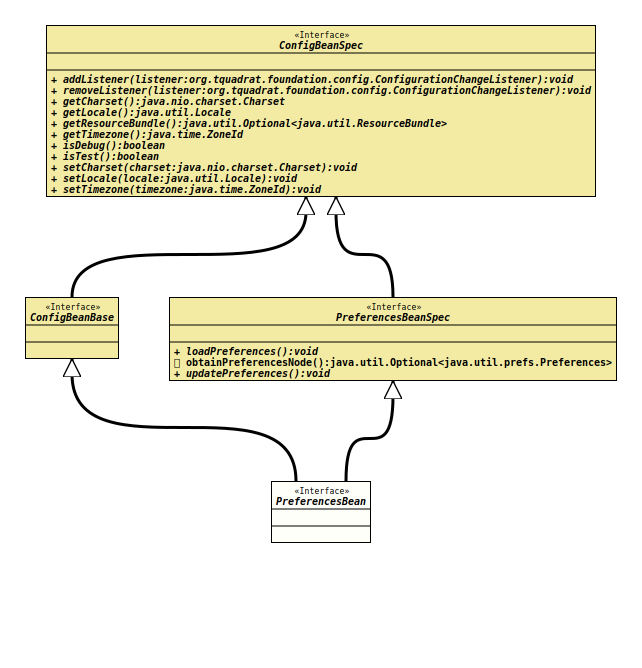

Package org.tquadrat.foundation.config
Interface PreferencesBean
- All Superinterfaces:
ConfigBeanBase,ConfigBeanSpec,PreferencesBeanSpec
@Deprecated(since="0.1.0",
forRemoval=true)
@ClassVersion(sourceVersion="$Id: PreferencesBean.java 884 2021-03-22 18:02:51Z tquadrat $")
@API(status=DEPRECATED,
since="0.0.1")
public interface PreferencesBean
extends ConfigBeanBase, PreferencesBeanSpec
Deprecated, for removal: This API element is subject to removal in a future version.
When a configuration bean should be connected with
Preferences,
the respective specification interface needs to extend this interface.- Author:
- Thomas Thrien (thomas.thrien@tquadrat.org)
- Version:
- $Id: PreferencesBean.java 884 2021-03-22 18:02:51Z tquadrat $
- Since:
- 0.0.1
- UML Diagram
-

UML Diagram for "org.tquadrat.foundation.config.PreferencesBean"
{kind=link}
-
Method Summary
Methods inherited from interface org.tquadrat.foundation.config.ConfigBeanSpec
addListener, getCharset, getLocale, getResourceBundle, getTimezone, isDebug, isTest, removeListener, setCharset, setLocale, setTimezoneMethods inherited from interface org.tquadrat.foundation.config.PreferencesBeanSpec
loadPreferences, obtainPreferencesNode, updatePreferences
PreferencesBeanSpec.